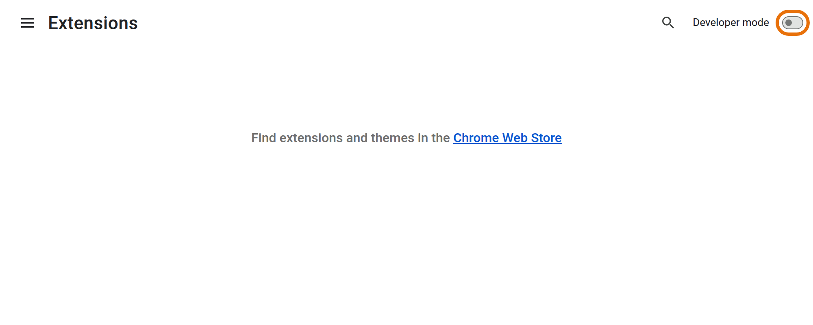
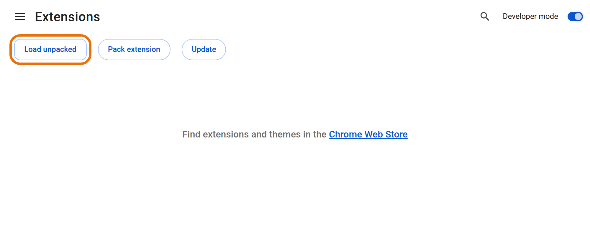
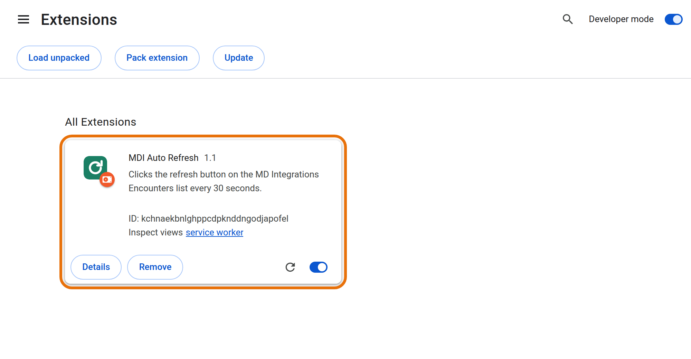

MDI Auto Refresh
Clicks the ⟳ refresh button on your MD Integrations Encounters list every 30 seconds, even when the tab is in the background, and logs you back in if MDI logs you out.
Version 1.2. For Google Chrome on Mac. Free, open source, about 2 minutes to set up. Not affiliated with or endorsed by MD Integrations.
- Open Chrome, type
chrome://extensionsin the address bar and press Return. - Find the card MDI Auto Refresh and click Remove (confirm with Remove again).
- Open Documents and drag the old
mdi-auto-refreshfolder to the Trash. - Now follow Install (one time) below as if it were new. You will set up auto login in the next part.
What it does
- Every 30 seconds it presses the same ⟳ button you would press on the Encounters list (Assigned, Flagged, Waiting Patient…).
- It never touches an open case, so a reply you are typing is never lost.
- It shows a Mac notification when a new encounter is assigned to you, when MDI locks itself, or when you are logged out.
- New in 1.2: auto login. If MDI logs you out, it types your email and password again, signs you back in and returns to the list you were on. You enter them once.
- New in 1.2: 24-hour summary. Click the extension icon to see how many refreshes, new assigned encounters and automatic re-logins there were in the last 24 hours.
- It keeps the Mac from going to sleep while the Encounters list is open, and stops Chrome from putting that tab to sleep.
Install (one time)
-
Download and unzip
Click the green Download button above. Open your Downloads folder and double-click
mdi-auto-refresh.zip. You get a folder calledmdi-auto-refresh.Move this folder to Documents and keep it there. Chrome runs the extension from this folder, so don't delete it.
Inside the folder you will see 6 files:
background.js,icon.png,LICENSE,manifest.json,popup.html,popup.js. You don't need to open or click any of them. -
Open Chrome's extensions page
Click into Chrome's address bar, type the address below, and press Return.
chrome://extensions(Clicking a link can't open this page; it has to be typed or pasted.)
-
Turn on “Developer mode”
Click the switch in the top-right corner.

-
Click “Load unpacked”
A new row of buttons appears on the left. Click Load unpacked. A file window opens:
- Go to Documents (or wherever the folder is).
- Click once on the
mdi-auto-refreshfolder to highlight it. Don't open it, and don't pick a single file. - Click Select in the bottom-right corner.
If you are already inside the folder and see the 6 files, that's fine too: just click Select.

-
Check that it's there
A card named MDI Auto Refresh appears, with its switch turned on (blue). Leave Developer mode on.

-
Pin the icon (recommended)
Click the puzzle-piece icon 🧩 to the right of the address bar, then click the 📌 pin next to MDI Auto Refresh. The green ⟳ icon now shows its status.
Set up auto login (one time)
-
Click the extension icon
Click the green ⟳ icon next to the address bar (if you can't see it, click the puzzle piece 🧩 first). A small window opens.
-
Enter your MDI email and password
Type them in the Auto login part and click Save. That's all: you never have to enter them again. The window then says “Password saved ✓” and never shows the password again.
To change it later, type the new password and click Save. Clear deletes both.
Set up the Mac (one time)
-
Allow Chrome notifications
Open System Settings → Notifications → Google Chrome. Turn on Allow notifications and set the style to Alerts, so they stay on screen until you see them.
-
Keep the Mac awake
The extension stops the Mac from falling asleep on its own. But closing the lid always puts a MacBook to sleep, and then nothing runs. When you step away, leave it plugged in with the lid open. It's fine if the screen goes dark or locks.
Everyday use
Open MDI in Chrome and log in
Use Chrome, the same way you always do. If you get logged out later, the extension logs you back in and returns to your list.
Go to an Encounters list
For example Assigned. The address starts with
app.mdintegrations.com/tabs/cases/list/.Leave that tab open
You can switch to other tabs or apps. Refreshing keeps going in the background. Within 30 seconds the icon shows a badge:
Badge Meaning ON Working. It is clicking the ⟳ button. R Still working, but it reloads the whole page because it couldn't find the button (MDI may have changed their site). Please let Gábor know. LOCK MDI locked itself after 20 minutes without activity. Type your password in MDI to continue. Hover over the icon to see the time of the last refresh. Clicking a notification takes you straight to the MDI tab.
Good to know
- It only works while Chrome is open and the Mac is awake. If you quit Chrome, it starts again by itself the next time you open Chrome and the MDI list.
- It only runs on
app.mdintegrations.com. It sends no data anywhere and uses no servers or accounts. It stores only your auto-login email and password, a count of what happened in the last 24 hours, and the last “Assigned” number, all on this computer. The full code is public on GitHub. - New-case alerts use the Assigned number in MDI's left sidebar. They can arrive up to 30 seconds after the case.
- MDI also refreshes itself every 20 minutes. This extension just makes it much more frequent.
- Please use it only on your own MDI account, and follow your employer's rules.
Turn off, update, uninstall
- Pause: go to
chrome://extensionsand switch the MDI Auto Refresh card off. Switch it on again to resume. - Update to a newer version: in
chrome://extensionsclick Remove on the old card, move the oldmdi-auto-refreshfolder to the Trash, then install the new zip as described above. (Don't keep two versions switched on at the same time.) Your saved email and password are removed with the old version, so enter them once again. - Turn off only auto login: click the extension icon and press Clear. Refreshing continues as before.
- Uninstall: click Remove on the card, then delete the folder. This also deletes the saved password.
Troubleshooting
The icon shows no badge
Make sure the tab is on an Encounters list (address contains /tabs/cases/list/), not inside a case. Wait 30 seconds. Check that the card in chrome://extensions is switched on.
Auto login didn't log me in
Click the extension icon and check that it says “Password saved ✓” (if not, enter email and password and Save). Wait up to 30 seconds after the logout. If MDI asks for a verification code or captcha, or the password was wrong, you get a notification “auto login failed”: log in by hand. After fixing the password in the extension, it tries again by itself.
I don't get notifications
Check System Settings → Notifications → Google Chrome (step 1 of “Set up the Mac”). Also turn off Focus / Do Not Disturb.
Chrome says “Disable developer mode extensions”
Click Keep or close the message. It appears because the extension isn't from the Chrome Web Store. It is safe.
It stopped while I was away
Almost always the Mac went to sleep (lid closed, or the battery ran low). Keep it plugged in with the lid open.
“Manifest file is missing” when loading
You selected the wrong folder. Select the mdi-auto-refresh folder that directly contains manifest.json.